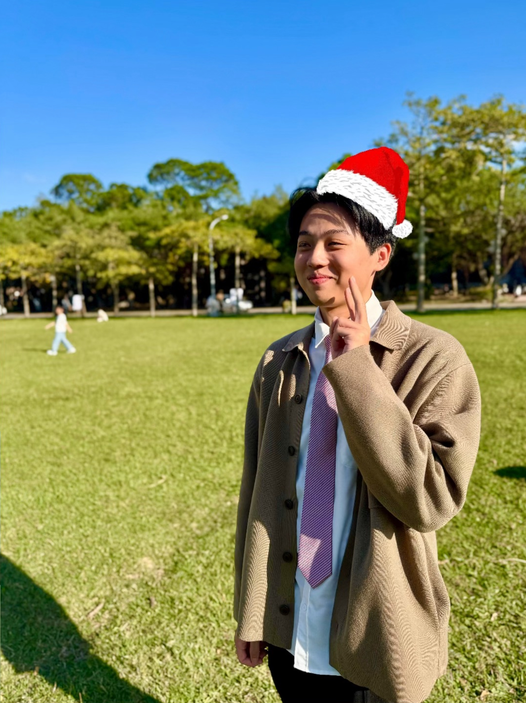

Yes, I build robots.
No, I don't talk to them... often.

Something about a world that runs on its own weird rules. There may or may not be a reason the crack in this page's corner looks familiar.
Chaotic, clever, always getting into something they shouldn't. I relate to this on a personal level.
Most of my best debugging happens after midnight, with too much caffeine and a breadboard I didn't plan on touching again tonight.
Trail walks around Hsinchu when the lab needs a break — the only debugging I do with no keyboard involved.